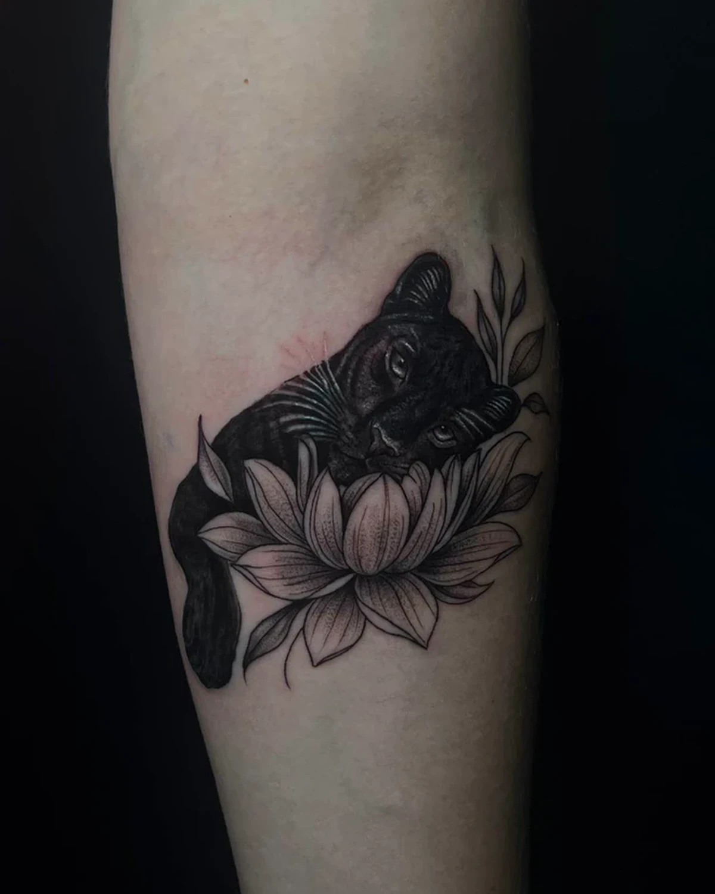
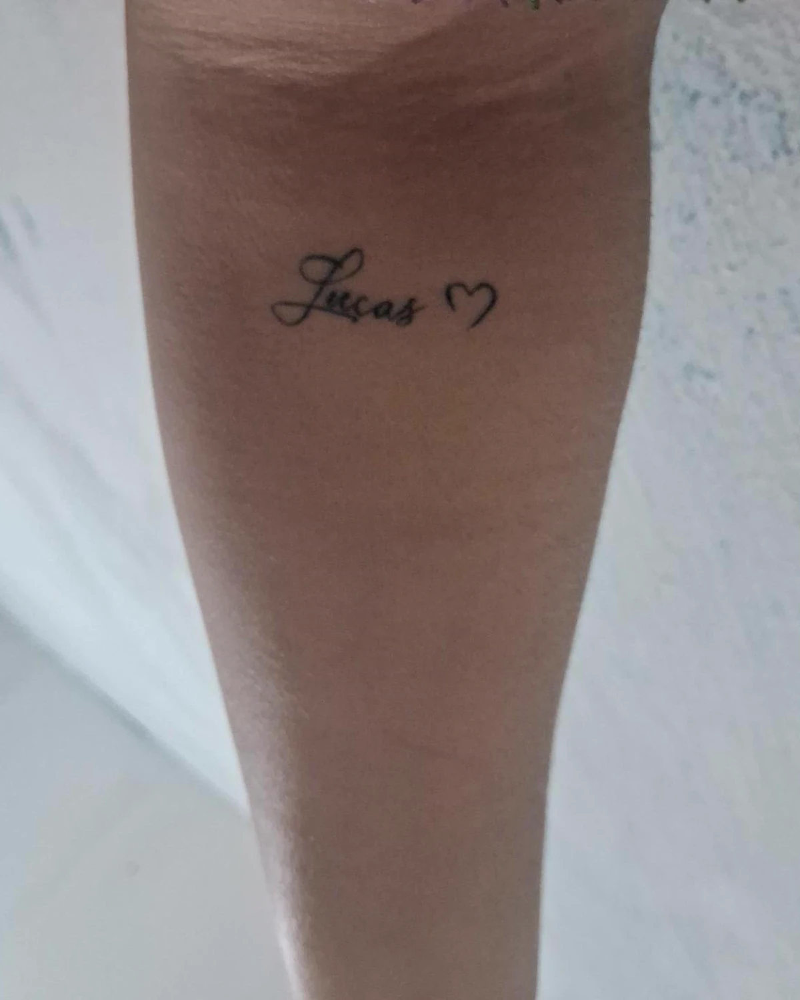

Casa Amarela · Recife
Cobertura de tatuagem em Recife
Aquela tatuagem que não representa mais você — um nome, um desenho antigo, um traço apagado — vira uma peça nova. Cicatriz também.
- Avaliação gratuita pela foto
- 5,0 no Google
- 1 cliente por dia
- 6 coberturas reais


AntesDepoisAntes e depois
Toque na foto pra virar e ver como era antes.
Não precisa conviver com ela
Nome ou frase
O nome que ficou no passado vira parte de um desenho — como a rosa que escondeu um nome.
Tatuagem antiga
Traço estourado, desenho apagado ou feito às pressas, que perdeu a forma com o tempo.
Desenho que não é mais você
Uma estrela colorida que virou sol em blackwork. Um chibi que virou Itachi.
Cicatriz
Com a pele já cicatrizada, o desenho é pensado em cima da marca — como o tigre na barriga.
A regra da cobertura: pra esconder de verdade, a tatuagem nova quase sempre precisa ser um pouco maior e ter partes escuras por cima da antiga. Traço fino e claro sobre preto não cobre. Por isso a avaliação vem antes de qualquer desenho.
Como funciona
Da foto no WhatsApp até a tatuagem nova cicatrizada.
Manda a foto
Da tatuagem atual, com boa luz e de frente, mais o tamanho aproximado.
Eu avalio
O que dá pra fazer por cima, o tamanho necessário e o valor. Sem custo.
A ideia fica sua
Traz a referência que você gosta — eu adapto pra ela esconder a antiga.
Sessão e cuidado
Data confirmada com sinal, atendimento só seu e cicatrização acompanhada.
Sobre cobertura
Dá pra cobrir qualquer tatuagem?
A tatuagem nova fica maior que a antiga?
Dá pra cobrir cicatriz com tatuagem?
Quanto custa uma cobertura de tatuagem?
Cobertura precisa de mais de uma sessão?
Posso escolher o desenho da cobertura?
Outros estilos

Manda a foto. Eu digo o que dá.
Foto da tatuagem atual, tamanho aproximado e a ideia que você tem. A avaliação é gratuita.
Pedir avaliação no WhatsApp →